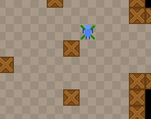

Today we'll turn our boring square into an animated character.
We will still be using the FlxSprite object, since it provides all the necessary methods to load a tileset and play animations.
Our tileset will consist of 4 walking animations - up, down, left and right. They will be defined in the initialization function and played in update(), when the player is moving somewhere.
We can use the FlxPath object's properties to find out what angle the player is moving in, and whether the player is moving at all.
First of all, here's the sprite sheet I'm going to use:

It's not an artistic masterpiece, but it will do...
Put this sprite sheet (or make your own) to the assets/images/ directory as hero.png.
Add this code to the init() function:
hero = new FlxSprite(16, 16);
hero.loadGraphic("assets/images/hero.png", true, 16, 16);
hero.animation.add("down", [0, 1, 0, 2]);
hero.animation.add("up", [3, 4, 3, 5]);
hero.animation.add("right", [6, 7, 6, 8]);
hero.animation.add("left", [9, 10, 9, 11]);
add(hero);
hero.animation.play("down");
You can see that I use the loadGraphic() function to load the tileset. The second parameter defines whether the sprite is animated or not (true in our case). The next two parameters are the width and height of a single sprite tile.
Add each animation as a sequence of frames. The frames are numbered in order, starting from 0.
Play the "down" animation as the hero is spawned to make him face downwards.
Add this code to the update() function:
// Animation
if (!path.finished && path.nodes!=null) {
if (path.angle == 0 || path.angle == 45 || path.angle == -45) {
hero.animation.play("up");
}
if (path.angle == 180 || path.angle == -135 || path.angle == 135) {
hero.animation.play("down");
}
if (path.angle == 90) {
hero.animation.play("right");
}
if (path.angle == -90) {
hero.animation.play("left");
}
} else {
hero.animation.curAnim.curFrame = 0;
hero.animation.curAnim.stop();
}
Here we check whether the path is currently animating our object, and if it is - we enter a sequence of if statements to determine what animation to play. Use the angle property of the path object to find out where the player is headed.
When the path is not animating our object, stop the animation at the first frame.
Here's the full PlayState.hx code:
package ;
import flixel.FlxCamera;
import flixel.FlxG;
import flixel.FlxObject;
import flixel.FlxSprite;
import flixel.FlxState;
import flixel.tile.FlxTilemap;
import flixel.util.FlxColor;
import flixel.util.FlxPath;
import flixel.util.FlxPoint;
import openfl.Assets;
/**
* A FlxState which can be used for the actual gameplay.
*/
class PlayState extends FlxState
{
private var tileMap:FlxTilemap;
public static var TILE_WIDTH:Int = 16;
public static var TILE_HEIGHT:Int = 16;
public static var LEVEL_WIDTH:Int = 50;
public static var LEVEL_HEIGHT:Int = 50;
public static var CAMERA_SPEED:Int = 8;
private var camera:FlxCamera;
private var cameraFocus:FlxSprite;
private var movementMarker:FlxSprite;
private var hero:FlxSprite;
private var path:FlxPath;
/**
* Function that is called up when to state is created to set it up.
*/
override public function create():Void
{
super.create();
tileMap = new FlxTilemap();
tileMap.loadMap(Assets.getText("assets/data/map.csv"), "assets/images/tileset.png", TILE_WIDTH, TILE_HEIGHT, 0, 1);
tileMap.setTileProperties(0, FlxObject.ANY);
tileMap.setTileProperties(1, FlxObject.ANY);
tileMap.setTileProperties(2, FlxObject.NONE);
add(tileMap);
cameraFocus = new FlxSprite();
cameraFocus.makeGraphic(1, 1, FlxColor.TRANSPARENT);
add(cameraFocus);
camera = FlxG.camera;
camera.follow(cameraFocus, FlxCamera.STYLE_LOCKON);
movementMarker = new FlxSprite();
movementMarker.visible = false;
add(movementMarker);
hero = new FlxSprite(16, 16);
hero.loadGraphic("assets/images/hero.png", true, 16, 16);
hero.animation.add("down", [0, 1, 0, 2]);
hero.animation.add("up", [3, 4, 3, 5]);
hero.animation.add("right", [6, 7, 6, 8]);
hero.animation.add("left", [9, 10, 9, 11]);
add(hero);
hero.animation.play("down");
path = new FlxPath();
}
/**
* Function that is called when this state is destroyed - you might want to
* consider setting all objects this state uses to null to help garbage collection.
*/
override public function destroy():Void
{
super.destroy();
}
/**
* Function that is called once every frame.
*/
override public function update():Void
{
super.update();
// Animation
if (!path.finished && path.nodes!=null) {
if (path.angle == 0 || path.angle == 45 || path.angle == -45) {
hero.animation.play("up");
}
if (path.angle == 180 || path.angle == -135 || path.angle == 135) {
hero.animation.play("down");
}
if (path.angle == 90) {
hero.animation.play("right");
}
if (path.angle == -90) {
hero.animation.play("left");
}
} else {
hero.animation.curAnim.curFrame = 0;
hero.animation.curAnim.stop();
}
// Camera movement
if (FlxG.keys.anyPressed(["DOWN", "S"])) {
cameraFocus.y += CAMERA_SPEED;
}
if (FlxG.keys.anyPressed(["UP", "W"])) {
cameraFocus.y -= CAMERA_SPEED;
}
if (FlxG.keys.anyPressed(["RIGHT", "D"])) {
cameraFocus.x += CAMERA_SPEED;
}
if (FlxG.keys.anyPressed(["LEFT", "A"])) {
cameraFocus.x -= CAMERA_SPEED;
}
// Camera bounds
if (cameraFocus.x < FlxG.width / 2) {
cameraFocus.x = FlxG.width / 2;
}
if (cameraFocus.x > LEVEL_WIDTH * TILE_WIDTH - FlxG.width / 2) {
cameraFocus.x = LEVEL_WIDTH * TILE_WIDTH - FlxG.width / 2;
}
if (cameraFocus.y < FlxG.height / 2) {
cameraFocus.y = FlxG.height / 2;
}
if (cameraFocus.y > LEVEL_HEIGHT * TILE_HEIGHT - FlxG.height / 2) {
cameraFocus.y = LEVEL_HEIGHT * TILE_HEIGHT - FlxG.height / 2;
}
// Mouse clicks
if (FlxG.mouse.justReleased){
var tileCoordX:Int = Math.floor(FlxG.mouse.x / TILE_WIDTH);
var tileCoordY:Int = Math.floor(FlxG.mouse.y / TILE_HEIGHT);
movementMarker.visible = true;
if (tileMap.getTile(tileCoordX, tileCoordY) == 2) {
var nodes:Array<FlxPoint> = tileMap.findPath(FlxPoint.get(hero.x + TILE_WIDTH/2, hero.y + TILE_HEIGHT/2), FlxPoint.get(tileCoordX * TILE_WIDTH + TILE_WIDTH/2, tileCoordY * TILE_HEIGHT + TILE_HEIGHT/2));
if (nodes != null) {
path.start(hero, nodes);
movementMarker.loadGraphic(AssetPaths.marker_move__png, false, 16, 16);
}else {
movementMarker.loadGraphic(AssetPaths.marker_stop__png, false, 16, 16);
}
}else {
movementMarker.loadGraphic(AssetPaths.marker_stop__png, false, 16, 16);
}
movementMarker.setPosition(tileCoordX * TILE_WIDTH, tileCoordY * TILE_HEIGHT);
}
}
}The player is now an animated blue robot thingy:
We'll continue in the next part by adding a HUD that displays health!